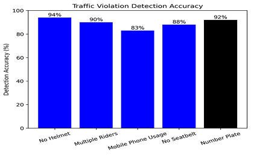
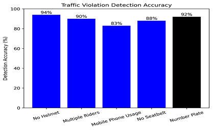

6+
Violation Categories Detected
Helmet, Seatbelt, Signal Jumping, Over-speeding, Mobile Use, Tripled Riders
This system leverages advanced computer vision algorithms to continuously monitor traffic behavior and accurately identify rule violations from CCTV or enhanced footage. It enables scalable, consistent, and automated enforcement across urban and highway networks.

Scalable computer vision technology designed to automatically detect and monitor traffic violations in real time, enabling consistent, data-driven road safety enforcement.
Helmet, Seatbelt, Signal Jumping, Over-speeding, Mobile Use, Tripled Riders
Across live & recorded CCTV feeds
Reducing manual enforcement dependencies
Urban traffic ecosystems demand scalable, real-time monitoring systems. Our AI-powered violation detection platform transforms standard CCTV infrastructure into an automated enforcement engine capable of identifying unsafe driving behavior with precision and speed.
Manual traffic monitoring is labor-intensive, error-prone, and difficult to scale across locations. Detecting violations such as riding without helmets, carrying more than two riders on a bike, using mobile phones while driving, not wearing seatbelts, over-speeding, and signal breaking requires continuous human intervention, leading to inconsistent enforcement and higher operational costs.
Developed an AI-driven traffic violation monitoring pipeline that analyzes video feeds to detect vehicles, riders, and driving behavior, and automatically identifies violations including no helmet, multiple riders on two-wheelers, mobile phone usage while driving, seatbelt non-compliance, over-speeding, and traffic signal violations. The modular design supports easy deployment on CCTV infrastructure and extension to additional violation categories.


 
